Þessu verkefni er skipt upp í þrjá hluta: SKera út límmiða með vínylskera, Hanna parametrískt, geirnelgt pressfit módel og lítill prófraun á laser skeranum til þess að reikan út kerfi
Hluti 1 - Vínylskeri
Fyrsti Þáttur verkefnis tvö var að læra að skera út límmiða með notkun á vínylskera. Nú þótti mér það ótrúlega fyndið og skemmtilegt að prenta út kennimerki á klúbb sem kemur til með að vera heimabar okkar þriða árs nema í útskriftarferðinni okkar núna í maí. Á myndum eitt og tvö er hægt að sjá þau kennimerki sem ég endaði á því að skera út:
Mynd 1: Heimabar útskriftarnema í Budva 2024
mynd 2: Límmiði 2
Til þess að undirbúa myndirnar fyrir vínylskerann þá flutti ég myndirnar tvær yfir í Inkscape þar sem ég framkvæmdi Trace bitmap á báðar myndir til þess að útbúa útlínur sem til kom að skera eftir. Þar á eftir þarf að slökkva á fill og hafa stroke í svörtum lit.
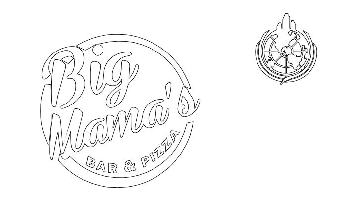
Mynd 3: Útlínur útbúnar fyrir vínylskurð
Fyrir skurðinn þarf hins vegar að breyta nokkrum stillingar atriðum, það þarf að ganga úr skugga um að stroke paint sé still á flat colour sem og að breidd á strikunum sé 0,02mm. Að lokum þarf að exporta límmiðanum sem PDF og ganga úr skugga um að þegar hann er opnaður á því formi, þá ætti hann að fylla út í alla pdf skránna. Eftir að ég var búinn að undirbúa báða límmiða líkt og lýst var hér að undan, þá kveikti ég á vínylskeranum og valdu efni fyrir báða miða.
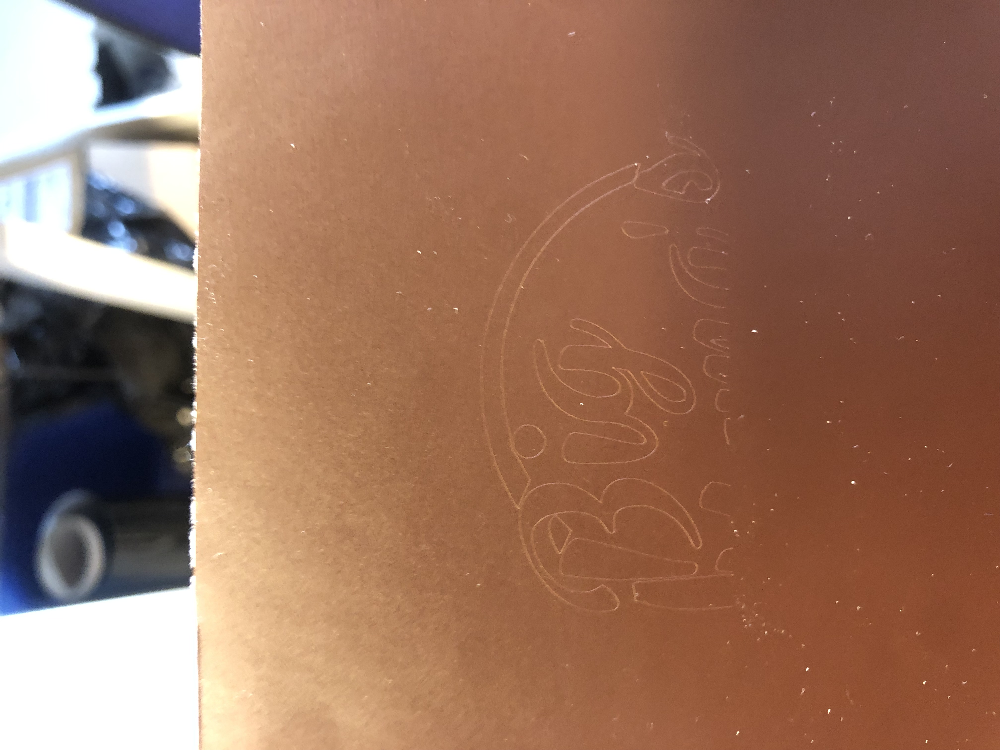
Mynd 4: Límmiðinn kominn úr skeranum (athuga að hann klikaði fyrst og þurfti ég að endurprenta hann)
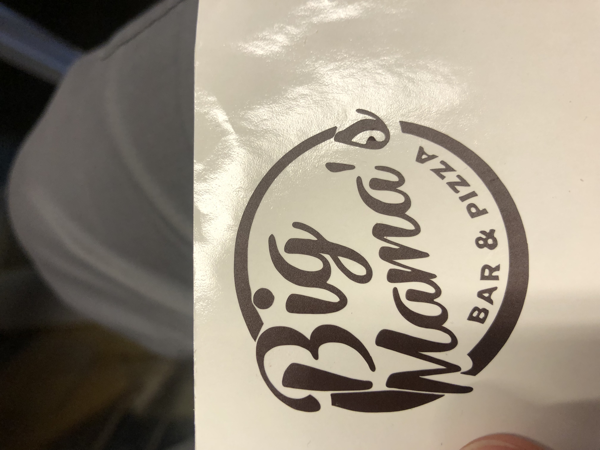
mynd 5: Límmiðinn undirbúinn
Til þess að koma límmiðanum á þann hlut sem þú vilt að hann fari á, þá þarf að líma yfir hann líkt og sést á mynd 6. Nú ætti límbandið að vera sterkara heldur en límmiði og nær þannig að taka miðann í heild sinni. Ég hins vegar lenti í miklu basli með vínrauða efnið þar sem límið virtist töluvert sterkara heldur en límbandið og þurfti ég því að að kroppa hann af á meðan ég tók límbandið af.
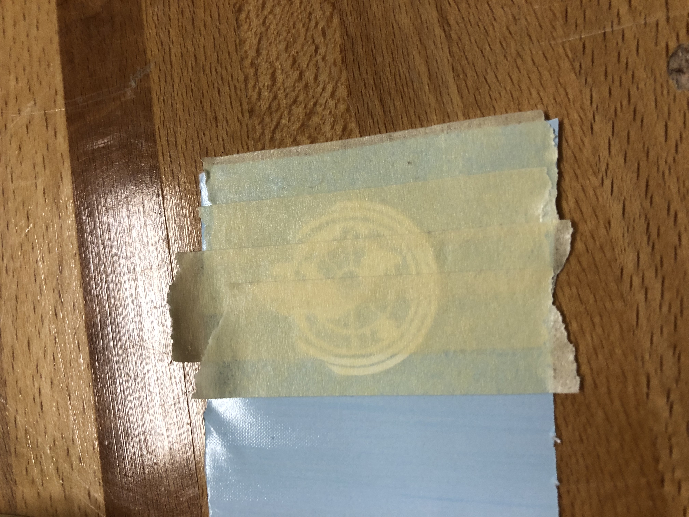
Mynd 6: Límband á límmiða
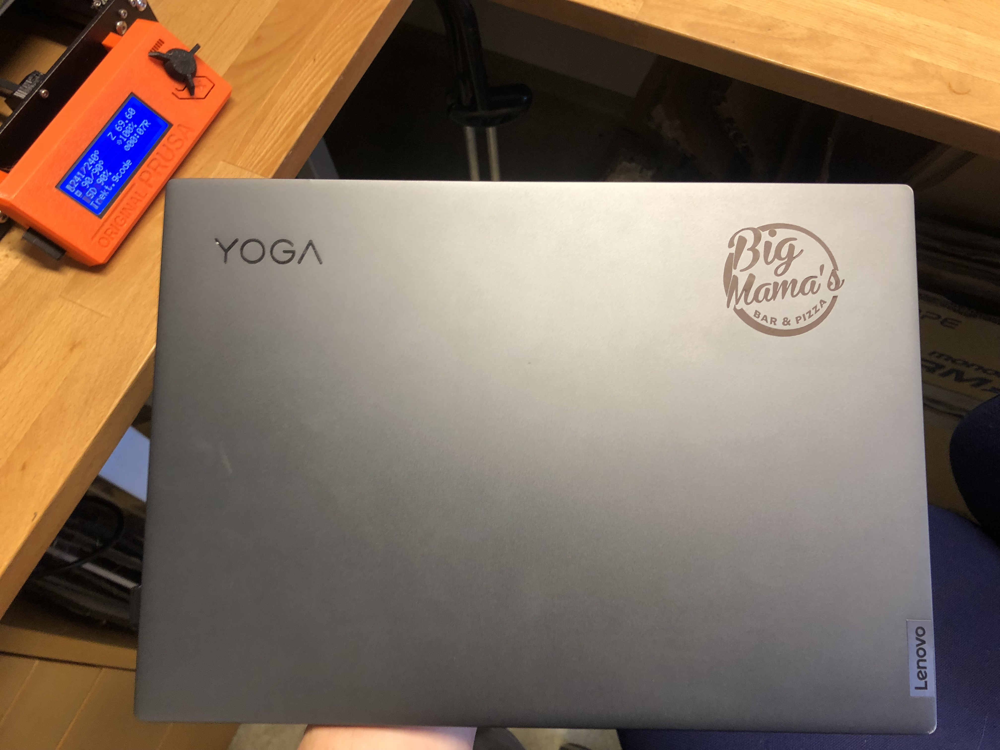
mynd 7: BMC kominn á tölvuna
Hluti 2 - Geislaskurður
Markmið þessa hlutar var að búa til geirneglt, parametrískt pressfit módel með því að skera 500x500mm plötur með geislaskera. Í upphafi verkefnis ákvað ég strax að eyða góðum tíma í hugmyndaöflun til þess að búa til hlut sem lætur mig læra á alla þætti geislaskurðar. Þar að auki langaði mig að skera út hlut sem ég gæti haft gaman af því að nota eða horfa á. Eftir langa leit þá fann ég eftirfarandi pressfit módel sem ég taldi mig hafa mikinn áhuga á að gera:
Að lokum taldi ég hugmynd eitt og tvö vera einum of flókið fyrir byrjenda og ákvað ég því að búa til geymslukassa með mikinn innblástur frá hugmynd þrjú. á mynd 8 er hægt að sjá þær parametríur sem ég bjó til í upphafi og gerði ráð fyrir að geta notað.
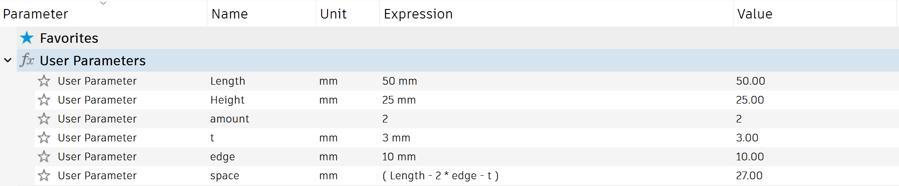
Mynd 8: Notaðar parametríur
Fljótlega eftir að ég byrjaði að teikna þá tók ég eftir því að ég ætti eftir að lenda í miklum vandræðum með að tengja hliðarveggi geymslunnar saman, á mynd 9 er hægt að sjá fyrsta vegg sexhyrningsgeymslunnar.
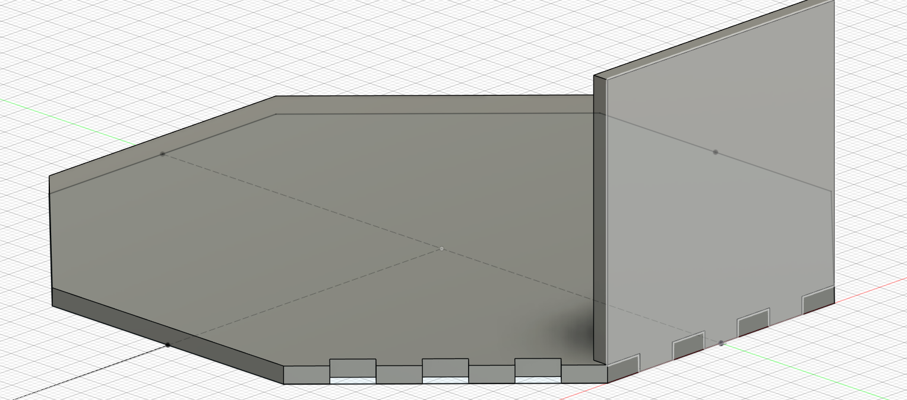
Mynd 9: Fyrsti veggur
Það sem auðvelt er að sjá á myndinni hér að ofan er að ef það hefðu komið veggir á allar hliðar sexhyrningsins, þá myndu þeir allir skerast. Þar með ákvað ég að fara aftur á byrjunarreit teikningar og hefjast handa við að endurhugsa hönnunina. Í þetta skipti ákvað ég að hanna tengingu á milli veggja og gólfplötu með sirka millimeter á milli festinga. Á mynd 10 og 11 er hægt að sjá nýjar útfærslur á liðum verkefnisins:
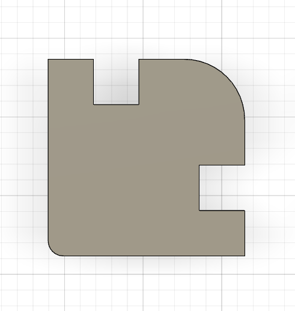
Mynd 10: Liður á milli gólfplötu og veggja
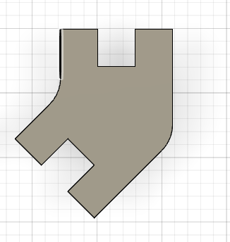
mynd 11: Liður á milli veggja
Þessi nýja útfærsla Bætir við fingurliðum sem og lagar veggjavandamálið og hófst ég því handa við að klára þessa útfærslu. Á myndum 12 og 13 er hægt að sjá hvernig parametríurnar geta breytt fjölda press fit liða á milli veggsins og gólfplötunnar.
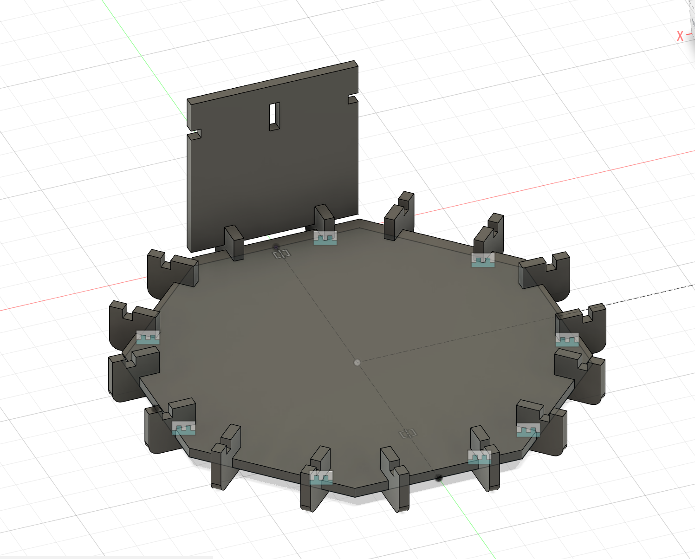
Mynd 12: Tvær press fit tenginar milli gólfplötu og veggs
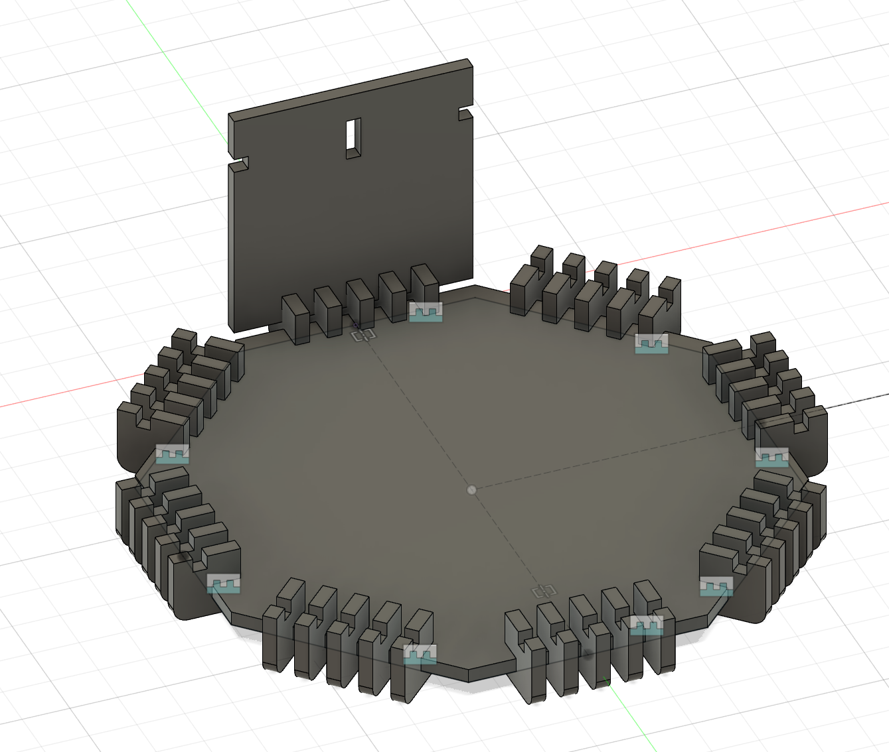
mynd 13: fimm press fit tengingar milli gólfplötu og veggs
Eftir þetta þá notaði ég Pattern on path til þess að setja veggi og festingar á allar hliðar sexhyrningsins. Loka skref teiknivinnslunnar var síðan að bæta við skilrúmi sem skipti geymslunni í fjögur hólf.
Mynd 14: Lokaútgáfa af geymsluboxi
Hægt er að nálgast .stp og .f3d skrárnar á Grabcad. Einnig hægt að nálgast á eftirfarandi fusion link:
Næsta skref var að undirbúa skurðarferil sem geislaskerinn myndi skera eftir, það er gert með því að fletja út allt módelið líkt og sést á mynd 15. Á sömu mynd er einnig hægt að sjá hvert þarf að fara til þess að hefjast handa við það að skilgreina kerf sem og geislaskerann:
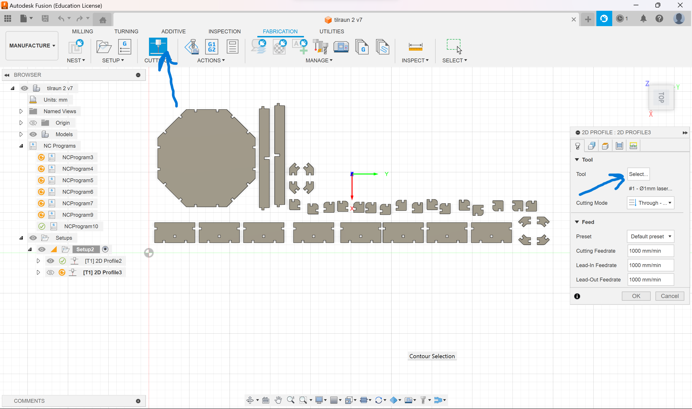
Mynd 15: Skilgreina geislaskera
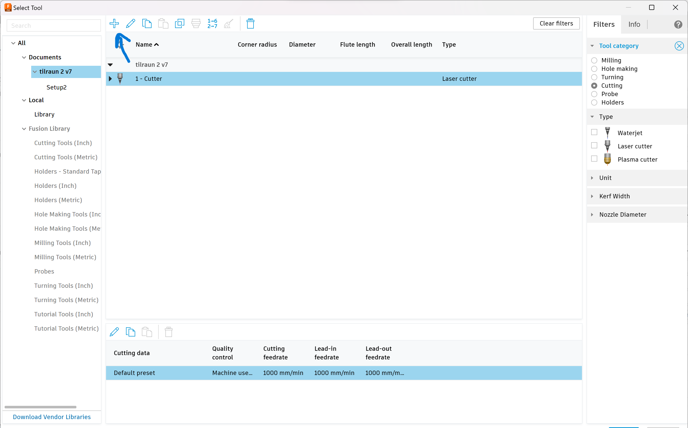
mynd 16: Frekari leiðbeiningar fyrir skilgreiningu geislaskera
Athuga þarf að til þess að módelið sé vel skorið press fit módel, þá þarf að að reikna kerfið geislaskerans líkt og gert er í hluta 3 þessa verkefnis. Í okkar útreikningum fengust hins vegar mjög ólíklegar niðurstöður en fengum við að kerfið ætti að vera 0.102mm sem er allt of lítið. Þar með ákvað ég að byrja á því að skera út miðað við 0.15mm kerf. Til þess að sannreyna bæði kerfið og festingarnar mínar þá ákvað ég að skera eingöngu einn vegg og eina af hvorri festingu. Á mynd 17 er hægt að sjá að press fit tengin komu vel út miðað við 0.15mm kerf
Mynd 17: Fyrsta skurðartilraun
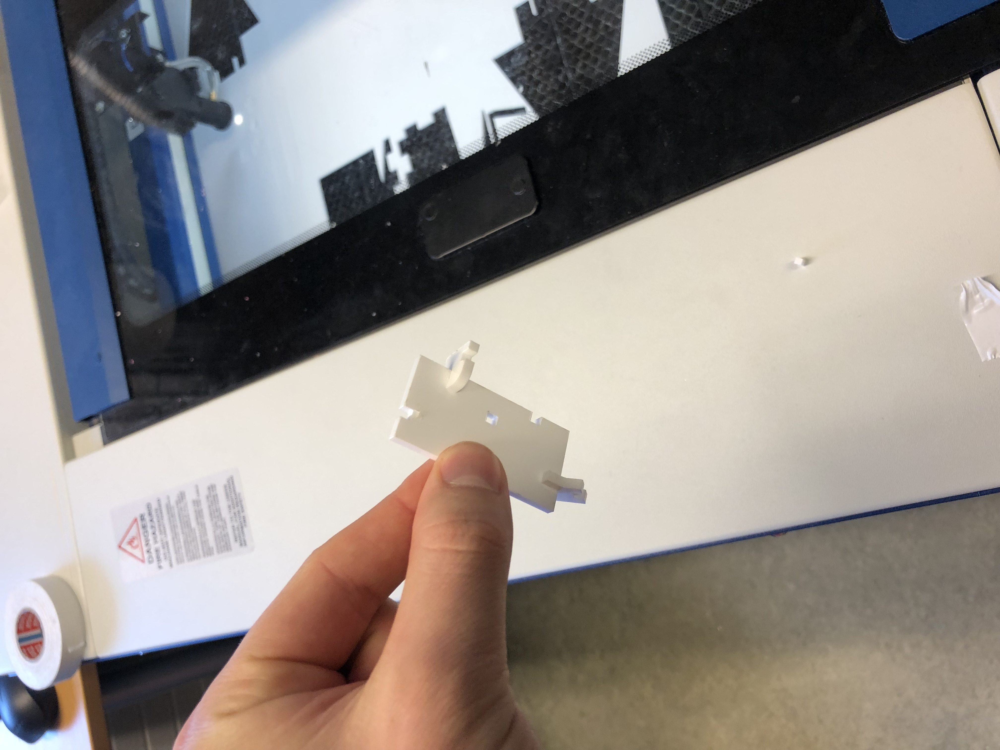
mynd 18: Fyrsta press fit tenging
Eftir að fyrsta press fit tengingin kom vel út, þá ákvað ég að skera út allt boxið. Það voru hins vegar mistök þar sem ég gerði ekki ráð fyrir því að akríl platan sem ég notaði var ekki jafn þykk alls staðar. Þegar ég reyndi að setja boxið saman komst ég fljótt að því að liðirnir voru langt frá því að vera press fit tengi. Þar með gekk ég í villuprófunarleit til þess að reyna að átta mig á því afhverju liðurinn virkaði í prufuskurðinum en ekki í megin skurðinum. Ég byrjaði á því að skoða hvort að kerfið hafi exportast rétt yfir í inkscape með því að kanna stærðir í fusion og í inkscape. Það virtist rétt og gerði ég því ráð fyrir því að kerfið væri ekki rétt eða þá að geislaskerinn væri að haga sér eitthvað furðuglega. Næst reiknaði ég aftur kerfið með því að mæla bitana mína og komst þá að því að kerfið samkvæmt þeirri mælingu ætti að vera 0.18mm.
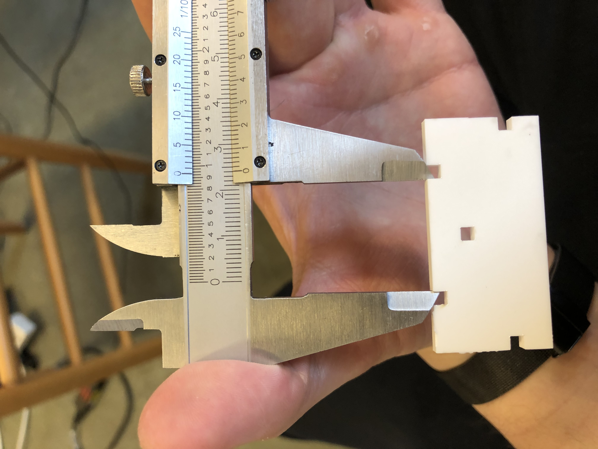
Mynd 19: Fyrstu mál
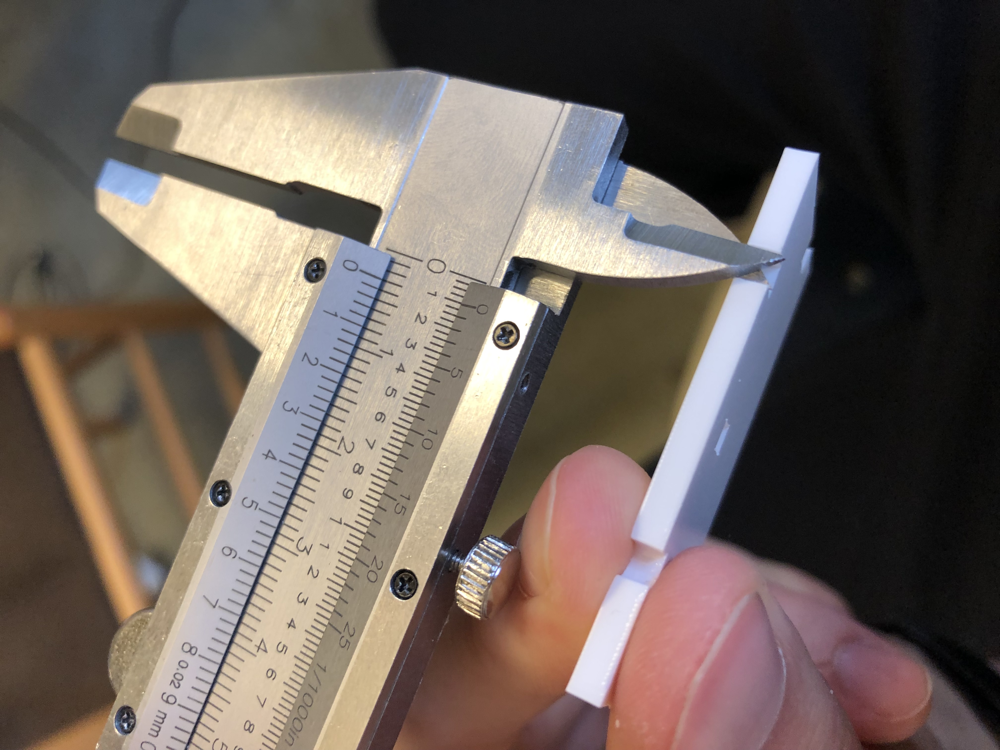
mynd 19: Seinni mál
Þar með reyndi ég aftur að skera út upphaflega tilraunareintakið nema með kerfið 0.18 mm en það klikkaði einnig. Í örvæntingu ákvað ég að lokum að skera prufueintakið enn og aftur út nema með kerfið 0.205 mm og tókst þetta þá loksins. Eftir nokkur stökk af gleði ákvað ég að skera allt eintakið út og byrja að púsla því saman. Það var hins vegar einum of mikið press fit og endaði ég á því að brjóta skilrúmin. Hins vegar þarf að athuga að það er mjög óeðlilegt að kerfið á geislaskeranum í vr3 sé 0.205mm og tel ég þar með að eitthvað sé að skeranum, að mig minnir þá skipti Hafliði um eitthvað á honum degi eftir að ég skar út.
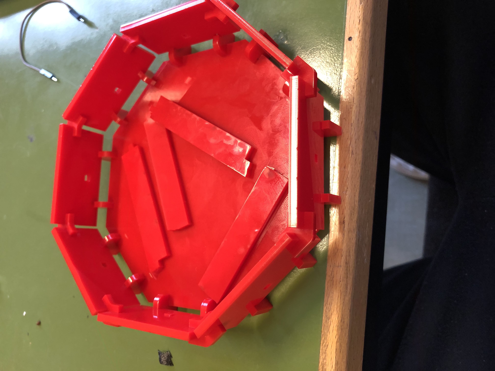
Mynd 20: Geymsla samsett með brotin skilrúm
Press fit módel í tölvustýrðum vélbúnaði
Í tölvustýrðum vélbúnaði á að búa til róbot sem hellir úr vínglasi. Ég endaði á því að nota þekkingu mína á press fit einingum úr þessum áfanga til þess að hanna einn af þremur örmum vélmennisins. Á myndum 21 er hægt að sjá geislaskorna press fit módel
Mynd 21: Geislaskorinn press fit armur á róbot (Sjá Verkefni 2 undir VÉL205M)
Hluti 3 - Kerf prófraun
Í þessum hluta verkefnisins átti að sannreyna kerfið á geislaskeranum með því að teikna nokkra kassa inn í inkscape og láta hann skera þá út. Á mynd 22 er hægt að sjá línurnar sem geislaskerinn fylgdi en á mynd 23 er hægt að sjá hvernig valið var hvar geislaskerinn átti að skera:
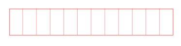
Mynd 22: Skurðarferillinn sem geislaskerinn fylgir
Til að byrja með var ferillinn búinn til með því að afrita og líma ferninga ofan á hvorn annan. Það er þó ekki góð hugmynd þar sem þá túlkar skurðarvélin það á þann máta að hún eigi að fara oftar en einu sinni eftir sama ferli. Þar með var myndin endurgerð til þess að komoa í veg fyrir það. Mynd 23 sýnir staðsetninguna sem ákveðið var að vélin myndi skera á og mynd 24 sýnir skurðin:
Mynd 23: Staðsetning skurðarflatar
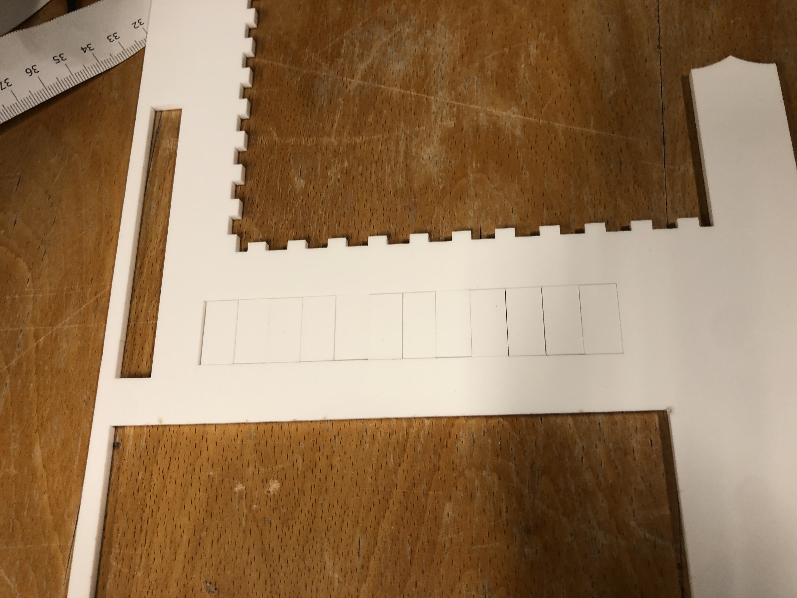
mynd 24: Platan skorin
Að lokum er hægt að sjá geislaskerann að skera plötuna í eftirfarandi myndbandi:
Útreiningar á kerf
Til þess að reikna kerfið þá eru útskornu kubbarnir og gatið mælt til þess að ákvarða muninn sem myndast hefur við það að skera kubbana út. Í okkar tilfelli mældist gatið sem 119,76mm en kubbarnir eingöngu 118,44mm. Það segir okkur að tómarúmið sem hefur myndast hefur lengdina 1,32mm. Að loku ákvörðuðum við kerfið með því að deila í tómarúmslengdina með fjölda lína sem geislaskerinn skar sem í okkar tilfelli voru 13 en þá fékkst að kerfið var 0,102mm. Það er þó pínu grunsamleg niðurstaða þar sem raun kerfið sem notast er við í þessum ákveðna geislaskera er 0,15mm.
Tímatafla fyrir verkefni tvö
Í eftirfarandi töflu er hægt að sjá yfirlit yfir tíma sem verkefnið tók.